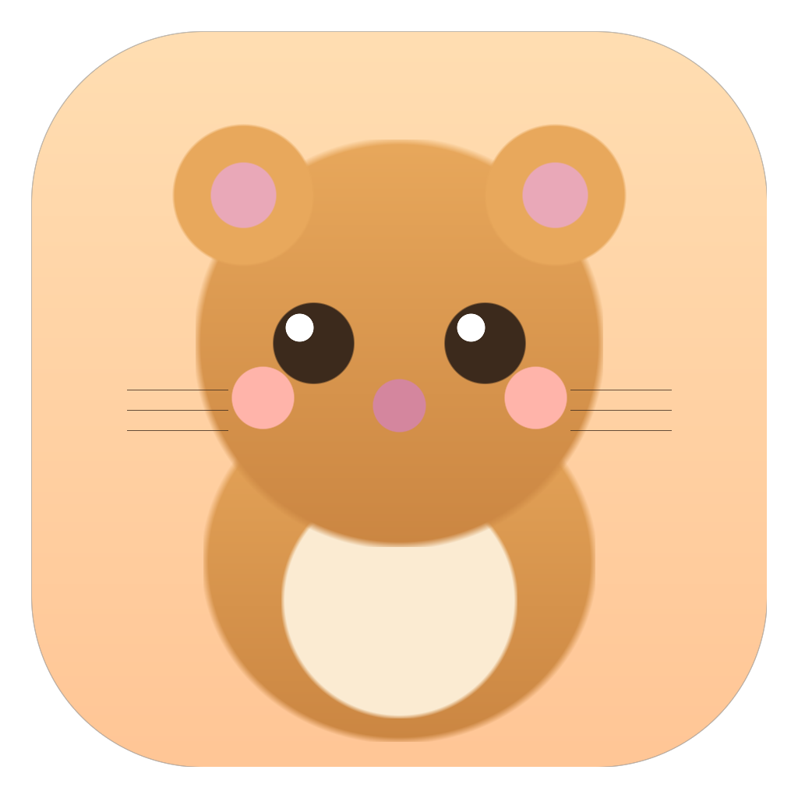

DeskPet
A tiny pixel cat that lives on your Mac desktop.
Loading latest release…
Unsigned build — first launch needs a one-time Gatekeeper step (below).
👀 Follows your cursor⌨️ Reacts to typing
🧘 Stretch & 💧 water reminders🍅 Pomodoro
✅ Jumps when your AI IDE finishes🎨 Custom color & markings
Install
- Open the
.dmg → drag DeskPet to Applications.
- First launch is blocked (unsigned). In Terminal, run:
xattr -dr com.apple.quarantine /Applications/DeskPet.app
then double-click DeskPet. (Or right-click → Open if you only see "unidentified developer".)
- Lives in the menubar 🐾. For typing/scroll reactions: System Settings →
Privacy & Security → Accessibility → enable DeskPet → relaunch.